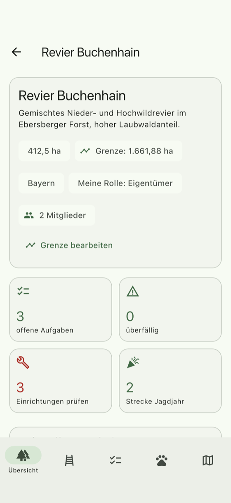
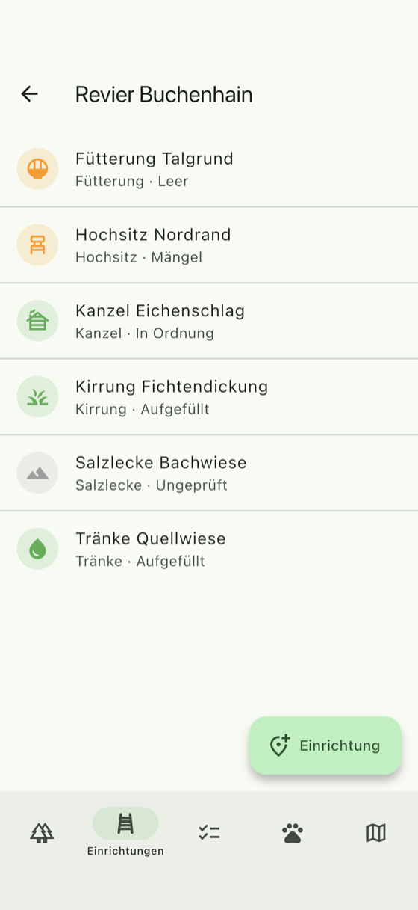
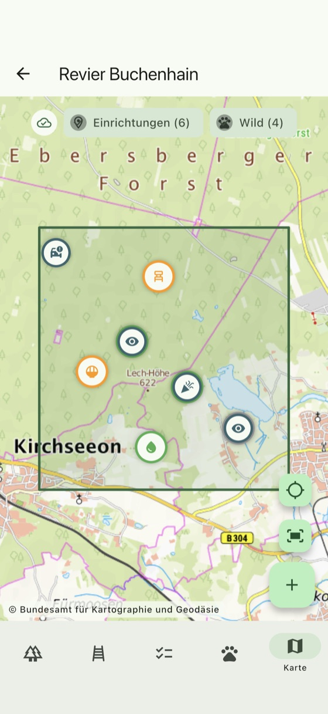

In development
Your digital gamekeeper
District, facilities, tasks and game at a glance.
Box blinds, bait sites and feeders stand out in the woods – and what is known about them lives on paper notes, in group chats and in three different heads. Jagdaufseher keeps it together: what is out there, what needs doing and what has been reported. In German and English, for Android, iPhone and iPad.

What the app does
Four areas that a district actually needs – and one map that shows them together.
-
District and boundary
Draw the boundary on the map and the area follows from it. Put a facility outside it and the app asks before saving.
-
Facilities
Box blind, ladder stand, bait site, feeder, water trough, salt lick – with location, photo and the date they were last checked.
-
Condition that fits the type
Anything holding a supply is full or empty. Anything built is sound or needs repair. The app only asks what makes sense for that facility.
-
Tasks
Refill a bait site, tighten a ladder, check a stand before a driven hunt: tasks belong to a facility and to a person.
-
Game and harvest
Harvest, found dead and roadkill with place, photo and date. The harvest count follows the hunting year from 1 April.
-
Shared district
Several members per district, each with a role – from owner to gamekeeper. Everyone sees the same state.

Works without a signal
There is no network in the woods, and that is exactly where the app is needed. So Jagdaufseher is not merely readable offline – it is usable offline.
- A district opens straight away with the last state it saw, without waiting for the server.
- New reports, facilities, tasks and ticks are kept and sent later – photos included.
- Anything still on its way is marked as such in the list. Nothing disappears quietly.
- Once there is a connection again, everything goes out in the right order.

All on one map
Facilities and game reports sit where they were recorded, with the district boundary around them and the map tiles kept on the device for offline use.
- Take the current location while creating an entry, or place it on the map.
- Tap the boundary corner by corner – the area in hectares comes with it.
- Photos belong to the facility and to the report, not to the camera roll.
Where it stands
Jagdaufseher is a private project and is not yet on the App Store or Google Play. It runs on Android, iPhone and iPad, with the interface in German and English.
Interested in trying it in your own district? Write to regetskcob@icloud.com.